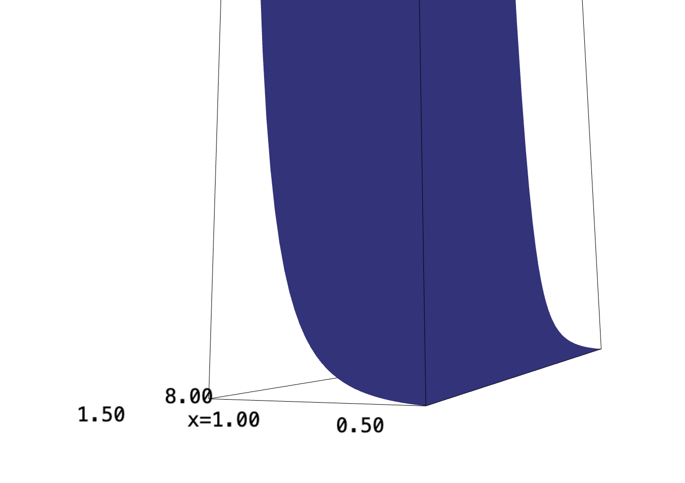

Backlinks
1 Finding Volume
Here's the shape:
x,y,z = var("x y z")
implicit_plot3d((7+x+y)-z, (x,-10,10), (y,-10,10), (z,-10,10), region=lambda x,y,z:(x**2+y**2<5), plot_points=100)

1.1 Cylindrical Coordinates
To find the volume beneath \(f(x,y) = 7+x+y\) above a circle of radius \(5\), we can leverage cylindrical coordinates.
Recall that, given an unit circle, we have:
\begin{equation} \begin{cases} x = r\ cos(\theta)\\ y = r\ sin(\theta) \end{cases} \end{equation}and the \(z\) value stays Cartesian. Therefore, we can change the expression into that in \(r\) and \(\theta\):
\begin{equation} f(r, \theta) = 7+r\ cos(\theta) + r\ sin(\theta) \end{equation}The "shell" of each circle in the expression would have circumference \(r\ d\theta\), therefore, the integral to form a circle of radius \(5\) and \(\theta \in [0, 2\pi]\) would be:
\begin{align} &\int_0^5\ \int_0^{2\pi}\ r(7+r\ cos(\theta) + r\ sin(\theta))\ d\theta\ dr\\ \Rightarrow &\int_0^5\ r(\left 7\theta+r\ sin(\theta) - r\ cos(\theta) \right|_0^{2\pi}\ )dr\\ \Rightarrow &\int_0^5\ (14\pi - r)-(-r)\ dr\\ \Rightarrow &\int_0^5\ 14\pi\ r\ dr \\ \Rightarrow &175\pi \end{align}1.2 Cartesian Coordinates
We can check this value by taking vertical slices of the function. A circle of radius five centered about the origin can be modeled by the expression:
\begin{equation} y = \pm\sqrt{5^2-x^2} \end{equation}We will take the integral along the \(y\) dimension first, bounded by this function; then, we will sum the results along \([-5,5]\) for the \(x\) dimension.
Taking the integral in \(y\):
\begin{align} &\int_0^{\sqrt{25-x^2}} 7+x+y\ dy + \int_{-\sqrt{25-x^2}}^0 7+x+y\ dy\\ \Rightarrow& \left \left(7y+xy+\frac{y^2}{2}\right)\right|_0^{\sqrt{25-x^2}} + \left \left(7y+xy+\frac{y^2}{2}\right)\right|_{-\sqrt{25-x^2}}^0\\ \Rightarrow& \left(7\sqrt{25-x^2}+x\sqrt{25-x^2}+\frac{25-x^2}{2}\right) + \left \left(7\sqrt{25-x^2}+x\sqrt{25-x^2}-\frac{25-x^2}{2}\right)\\ \Rightarrow& 14\sqrt{25-x^2}+2x\sqrt{25-x^2} \end{align}We will leverage Sage to take the integral in \(x\).
\begin{equation} \int_{-5}^{5} 14\sqrt{25-x^2}+2x\sqrt{25-x^2}\ dx \end{equation}f(x,y)=7+x+y (f.integrate(y, 0, sqrt(25-x^2)) + f.integrate(y, -sqrt(25-x^2), 0)).integrate(x,-5,5)
As we can see, the result from both expressions are the same, \(175\pi\).
2 Veena's Double Integral
Here's Veena's double integral:
\begin{equation} \int_0^8 \int_{\sqrt[3]{y}}^2 e^{x^4}\ dx\ dy \end{equation}f(x,y) = e^(x^4) plot3d(f, (x, 0.5, 1.5), (y, 0,8))

The surface approaches \(0\) as \(x\) decreases, and approaches \(+\infty\) as \(x\) increases.
Here's the actual region:
x,y,z=var("x y z")
implicit_plot3d(8*e^(x^4)-z, (x,-1,1),(y,-1,1), (z,8,10), region=lambda x,y,z:y>0 and x>y^(1/3) and x<2 and y<8, plot_points=300)

We realize that it is actually much more difficult to take the integral through the order which is stated in the problem, but it becomes dramatically easier to do so in the reverse order of integration.
Begin by noting the direction of slice drawing. In the original expression, we are slicing by:
\begin{align} &[x=\sqrt[3]{y}, x=2]\\ &[y=0, y=8] \end{align}in that original order. However, we aim to switch the order of integration, to slice along \(y\) first then \(x\).
The bounds of \(y\) must now be that newly constrained by the constraint function. It is now between \(0\), the same starting point, and \(x^3\), the maximum height at each point:
\begin{equation} &[y=0, y=x^3] \end{equation}Adjusting the bounds of \(x\) accordingly, at \(8\), the original $y$-maximum, \(x\) would take on the value of \(2\).
\begin{equation} &[x=0, x=2] \end{equation}Hence, our actual integral becomes:
\begin{equation} \int_0^2 \int_{0}^{x^3} e^{x^4}\ dy\ dx \end{equation}Let's now take first the inner integral.
\begin{align} &\int_{0}^{x^3} e^{x^4}\ dy\\ &\left e^{x^4}\right|_{0}^{x^3}\\ &\left x^3 e^{x^4} \end{align}Great, now, we take the outer integral.
\begin{align} \int_0^2 x^3 e^{x^4}\ dx \end{align}This is now easily performable by u-sub.
Let \(u = x^4\), and:
\begin{align} &u = x^4 \\ \Rightarrow & \frac{du}{dx} = 4x^3\\ \Rightarrow & du = 4x^3\ dx\\ \Rightarrow & \frac{1}{4} du = x^3\ dx \end{align}Substituting the right side and \(u\) from this expression:
\begin{align} &\int_0^2 x^3 e^{x^4}\ dx\\ \Rightarrow &\int_0^2 \frac{1}{4} e^{u}\ du\\ \Rightarrow &\frac{1}{4} \int_0^2 e^{u}\ du\\ \Rightarrow &\left\frac{1}{4} e^{x^4} \right|_0^2 \\ \Rightarrow &\left\frac{1}{4} \left(e^{16}-1 \right) \end{align}3 Average of Function
Here's the function:
f(x,y) = e^y *sqrt(x+e^y) plot3d(f, (x,-10,10), (y,-10,1))

We wish to find the average value of the function \(f(x,y) = e^y\sqrt{x+e^y}\) between some bounds \((0,0)\), \((4, 0)\), \((4,1)\), \((0,1)\).
The best way to approach this is to find the integral bounded by these points, than divide by the area under.
We will take the integral w.r.t. \(y\) first to perform u-substitution, then integral along \(x\).
\begin{equation} \int_0^4 \int_0^1 e^y\sqrt{x+e^y}\ dy\ dx \end{equation}We first take the inner integral.
\begin{equation} \int_0^1 e^y\sqrt{x+e^y}\ dy \end{equation}We will set \(u=x+e^y\). Therefore:
\begin{align} &\frac{du}{dy} = e^y\\ \Rightarrow &du = e^y\ dy \end{align}Substituting this expression in:
\begin{align} &\int_0^1 e^y\sqrt{x+e^y}\ dy \\ \Rightarrow & \int_0^1 \sqrt{u}\ du \\ \Rightarrow & \left \frac{2}{3} {u}^{3/2} \right|_0^1 \\ \Rightarrow & \left \frac{2}{3} (( x+e )^{3/2}-( x+1 )^{3/2}) \end{align}At this point, I am not quite sure how to proceed taking the integral. We will continue using Sage.
According to Sage, the result is:
\begin{equation} \frac{4}{15} \, \sqrt{e + 4} e^{2} + \frac{32}{15} \, \sqrt{e + 4} e - \frac{20}{3} \, \sqrt{5} + \frac{64}{15} \, \sqrt{e + 4} - \frac{4}{15} \, e^{\frac{5}{2}} + \frac{4}{15} \end{equation}which is roughly \(13.3\).
As we have \(13.3\) units of value in the expression of area \(4\), the mean value of the function is \(13.3/4 = 3.325\).
4 Mark Hurwitz Inherits Triple's Box
Given that Mark is placing his box at one corner at the origin and the other at \((3,3,4)\), there is no chance of the \(z\) value reaching the discontinuity at \(z=-1\).
As such, we can simply find the volume of his box by multiplying the side lengths together. The volume would be \(3\cdot 3\cdot 4 =36\).
We will do the same to find the total mass by taking the integral of the expression:
\begin{equation} \int_0^3 \int_0^3 \int_0^4 \frac{1}{z+1} dz\ dy\ dx \end{equation}The first layer in the middle can by taken by u-sub. Setting \(u = z+1\), we have \(du = dz\). Hence:
\begin{equation} \int_0^3 \int_0^3 log(5) \ dy\ dx \end{equation}We can see now that our problem is now a matter of taking this value over an area of \(9\). Hence, the total integral is:
\begin{equation} 9log(5) \end{equation}This also renders the average density this value divided by the volume of the box:
\begin{equation} \frac{9log(5)}{3\cdot 3\cdot 4} = \frac{9log(5)}{36} = \frac{log(5)}{4} \end{equation}The actual box is not very exciting:
from sage.plot.plot3d.shapes import Box Box([3,3,4])